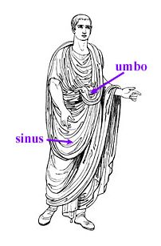
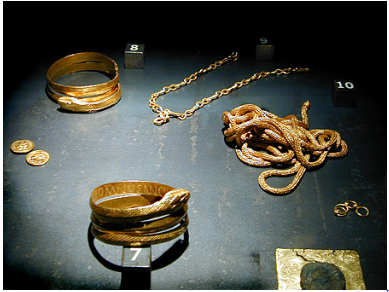

Unfortunately there is little evidence for clothing within Pompeii aside from frescos and other artistic representation. Although we can assume Pompeiians dressed in the same attire as thoughts in other Roman colonies, as weather conditions didn’t prohibit this.
As with other facets of life, Pompeiians often flaunted their wealth and class with expensive food, imposing housing and elegant art. As such, we are able to assume that clothing was no different and stratified based on one's class within society. For example the toga, shown in source 1, would severely restrict movement, meaning that it could not be worn by slaves and poorer citizens as it may interfere with their work. Similarly we can assume the elite did not want to be associated with these more labour intensive professions, aboting for forms of dress like the toga.
Source 1: Toga
The toga was also coloured, with differences in colour representing the status of an individual. Source 2 shows the symbolism of colour within the clothing.
Source 2: toga virilis also called toga pura: unadorned toga in the off-white color of the undyed wool that was worn by adult male citizens toga praetexta: off-white toga with a broad purple border shown in the right-hand drawing. The only adults allowed to wear this toga were curule magistrates (curule aedile and above). toga pulla: toga made of dark-colored wool worn during periods of mourning toga candida: artificially whitened toga worn by candidates for political office toga picta: purple toga embroidered with gold thread worn by a victorious general during a triumphal parade and later adopted by emperors for state occasions. A variant of this costume was the toga purpura, an all-purple toga worn by the early kings and possibly adopted by some emperors
While the toga was symbolic of high status when worn by a male, when worn by a woman the toga represented low status. This was due to them being a common dress for prostitutes, a profession often worked by slaves and frowned upon within Roman society.
Jewelry was popular within the city, although we can assume it was only worn by the elite or plebs media due to the entestive process or getting and crafting the raw materials to create it. Interestingly, source 3, shows that jewelry wasn’t signifficantly different then jewelry today, although a sperpant theme was common.
Source 3: Jewelry found within Pompeii
Interestingly the serpent bracelet labeled 7 is inscribed with the following inscription: ‘DOM[I]NUS ANCILLAE SUAE’, meaning, ‘from the master to slave girl’. This suggests that, while presumably uncommon, slaves and slave owners entered relationships.